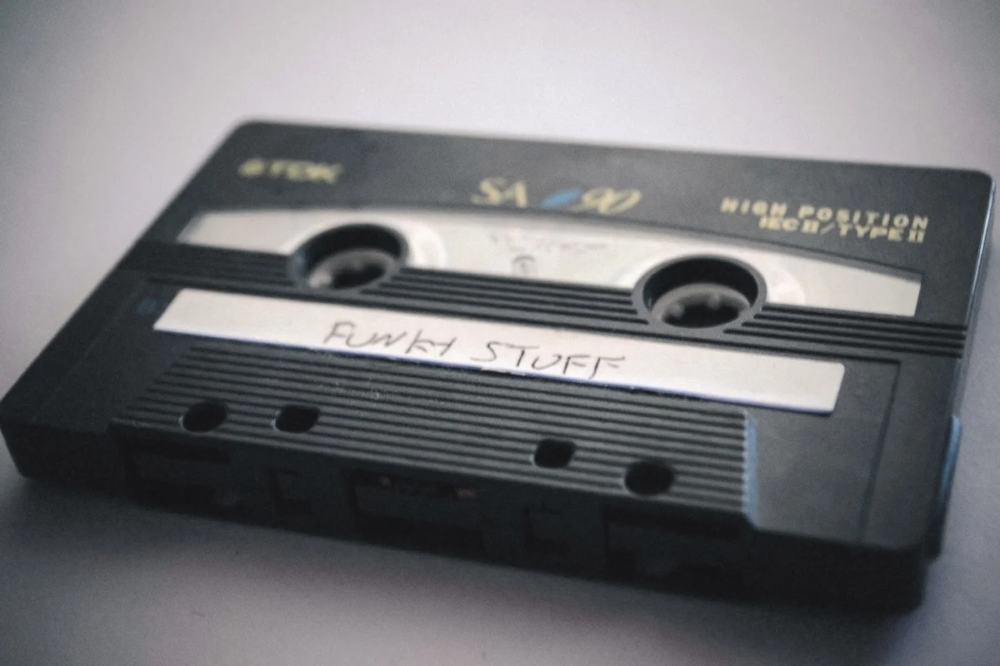
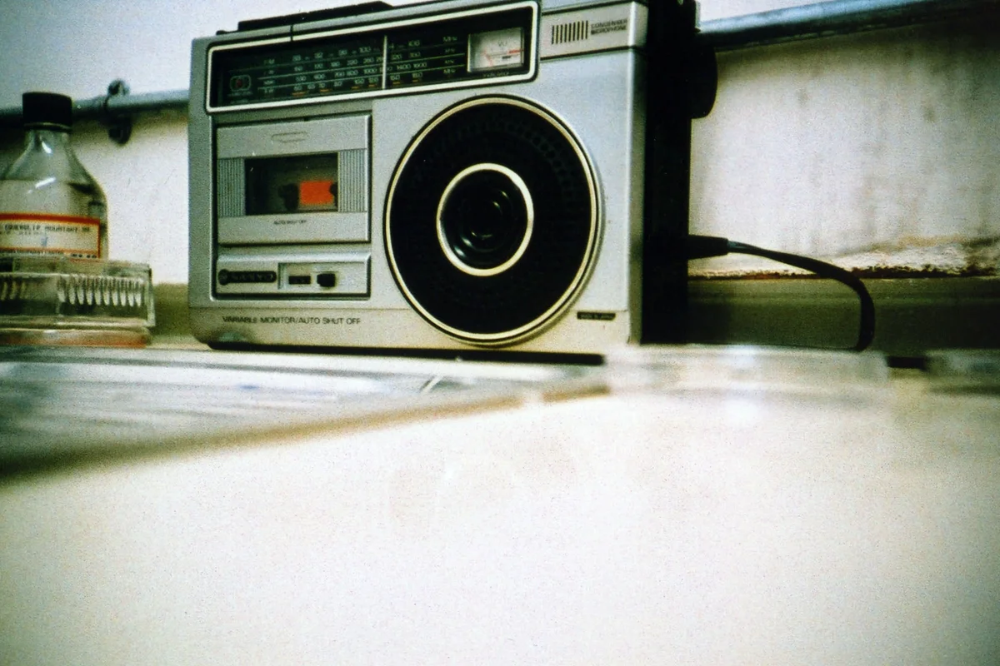

Music & memories - 1980s
The mixtape that said it all
A blank cassette, a favorite song, and the patience to make something personal.

A playlist you made by hand
Making a mixtape asked you to pay attention. You chose the opening song, thought about what should follow it, and watched the remaining space on the tape. The order was part of the message.
Perhaps you changed your mind after the first few songs and started again. You could hear the whole thing in your imagination, but getting it onto the tape took another sort of patience. There was pleasure in deciding that two songs belonged beside each other, and finding out that they did.
A small cover with a lot to say
The little paper insert could become its own project. You wrote out the tracks, squeezed in one more title, or drew something in the corner. A gift made this way carried traces of the person who made it.

Maybe you began in careful lettering and finished in much smaller writing. A crossed-out word could stay there, too. You might turn the insert over, looking for room for a dedication that felt right. Even before the tape played, the recipient would have something of yours to hold.
Waiting for a favorite song
For some of us, a radio broadcast offered the chance to catch a song we loved. You listened, waited, and hoped you would press record at just the right moment. The result could include a presenter’s voice, but that became part of the memory too.

Perhaps the beginning escaped you, or you waited through a song you didn't want, hoping the next one would be yours. Do you remember where you sat while listening? A little stretch of waiting could become part of the finished tape, even when nobody else knew it was there.
The music between two people
A tape could be a birthday present, a road-trip companion, or a way of sharing a feeling that was easier to express through a song. It was an everyday object with room for a very personal story.
You may have wondered which song the other person would notice first. Perhaps you listened together and tried not to watch their face too closely. Or you gave it to them with a casual comment that concealed how much thought had gone into every choice.
What would go on your tape?
Imagine you have one blank cassette and someone special to give it to. What is the first song you choose? And what would you write on the cover?
Ask someone who received a tape from you which song they remember.
← Back to all stories · Explore the decades · Your saved stories
← Back to the games · All articles · About · Privacy policy · Photo credits · Cookie settings